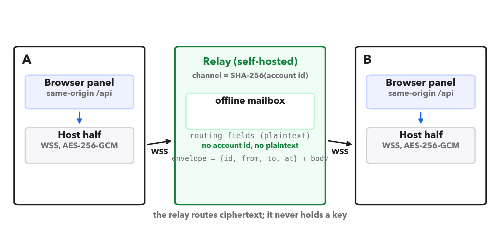
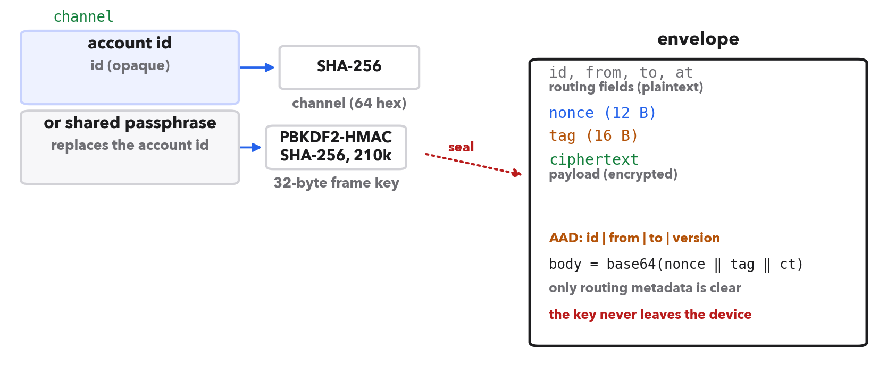
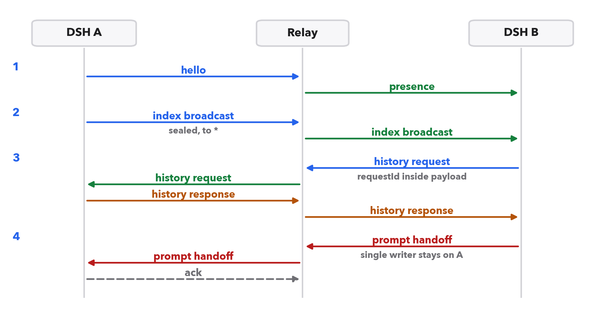
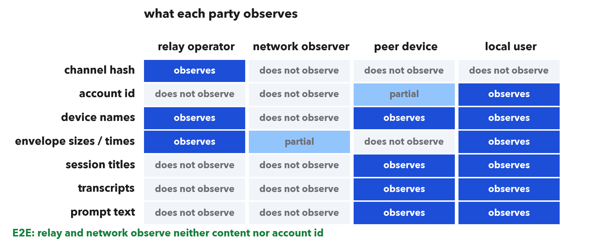
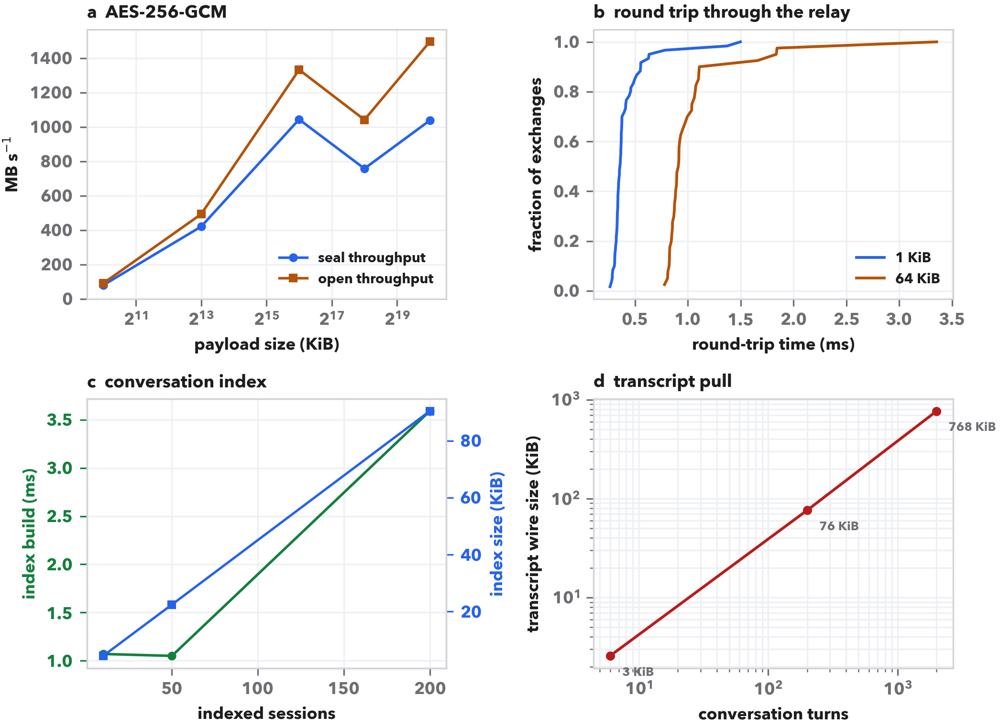
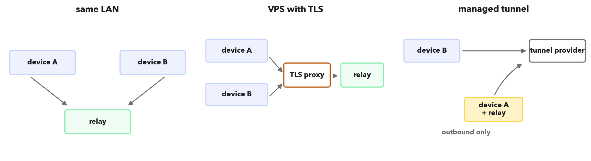
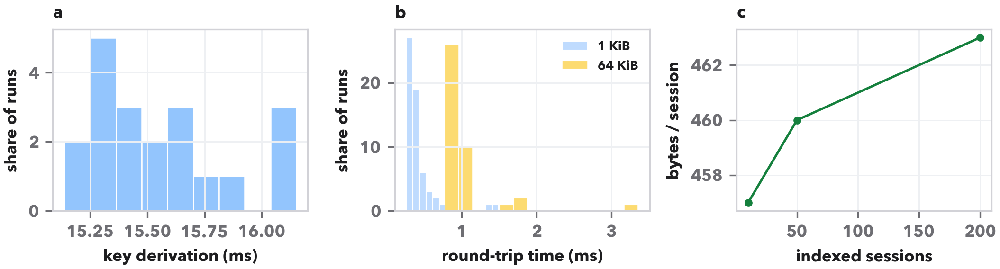
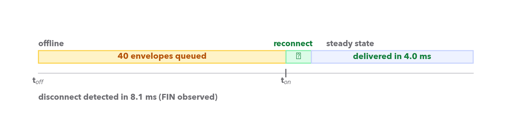

An agentic workstation is a different kind of application from a chat window. The model runs on the provider's side, but the loop that surrounds it — reading files, running tests, editing a repository, keeping a plan — runs on the user's machine, and the conversation that records that loop is a local artefact. In the DeepSeek Harness (DSH) the artefact is an append-only event log: every user message, assistant turn, tool call, todo rewrite and goal change is an event with a sequence number, persisted as newline-delimited JSON and compressed with zstd [[dsh,eventsourcing,jsonl,zstd]]. Sessions are not documents that are periodically saved; they are logs that are only ever appended to. That design choice is what makes the workstation reproducible and auditable, and it is also what makes synchronisation hard, because two writers to one log produce a fork that no merge can repair.
The demand for multi-device access is nevertheless routine. A researcher starts a long analysis on a desktop, closes the laptop, and wants to see from the train whether the run finished and what it concluded. A developer pairs a laptop with a lab server that has the GPU and the dataset, and wants the server's sessions visible from the laptop. In both cases the same person is signed in on both machines, and neither machine wants to become a thin client of the other: the work must stay where the files and the tools are.
Existing mechanisms solve adjacent problems. File synchronisers replicate directories but not the semantics of a log, and they merge conflicts by duplicating files [[syncthing]]. Git mirrors are excellent at history but assume a writer that pushes and a reader that merges, and they expose the full history to whoever holds the remote [[git,rsync]]. Federated chat protocols give multi-device access but through a homeserver that stores plaintext and holds an account for the user [[matrix]]. Overlay networks and tunnels make a machine reachable, but reachability is not synchronisation: the peer still has to be driven as a remote desktop, and the conversation index is not part of the connection [[tailscale,cloudflared]]. Peer-to-peer replication research solved ordering and convergence for replicas that all write [[dynamo,bayou,crdt]], and local-first architectures put the copy on every device [[localfirst]], but the agentic case has a constraint those systems do not: exactly one machine may execute a session, because the tools and the files are there.
We therefore asked a narrower question. What is the smallest mechanism that lets two same-account workstations see each other's conversation and task state, read a transcript on demand, and hand a new prompt to the machine that owns the session, while a self-hosted relay learns nothing but routing metadata? Deep Connect answers it with four design decisions, each of which is evaluated below. First, the signed-in account is the shared secret: devices derive a channel identifier and a frame key from it locally, so there is no pairing ceremony, no scan of a QR code and no account on the relay. Second, the relay is a dumb, dependency-free router with an offline mailbox; it sees a channel hash and opaque envelopes, never a key and never a payload. Third, conversation state is exchanged as an index that is derived from the same event log that already holds todos, goals and team tasks, so task state is not a second subsystem to synchronise. Fourth, a remote prompt is delivered to the owning machine and executed there, so the log keeps a single writer and no conflict resolution is required.
The result is a {{code_lines}}-line implementation — a host half inside DSH, a browser half that renders the panel, and a relay — verified by 174 automated checks and measured end to end. The rest of this paper states the requirements that shaped it (Table 1), describes the rendezvous, envelope, index, transcript and handoff mechanisms (Figs. 1–3), analyses what the relay and an observer can learn (Fig. 4), reports performance and scale (Fig. 5 and Table 5), and closes with the failures that the design had to absorb and the boundaries that remain.
Table 1 lists the eight requirements that drove the design and the mechanism that satisfies each, together with the evidence that it does. Three of them are unusual enough to state plainly. R3 forbids any inbound port: a workstation may sit behind NAT, and requiring a public address would exclude exactly the lab-server case the system exists for, so both devices dial out to the relay and the relay never dials in [[tailscale,websocket]]. R5 forbids concurrent writers: a session is executed by one machine, so the other machines are readers and prompt forwarders, never executors. R7 forbids a runtime dependency beyond Node's standard library, because the relay is meant to be started by the same person who runs the workstation, on a machine that may have nothing installed but Node.
The shape that follows is three processes and one wire. On each workstation a browser panel talks to the local host half over a same-origin route, so the panel never needs a cross-origin exception and never touches the channel [[sameorigin]]. The host half owns the WebSocket to the relay, the derived key, the index of local sessions and the answers to peer requests. The relay owns rooms keyed by the channel hash, per-device presence and an offline mailbox (Fig. 1). Nothing in that picture requires the two workstations to be reachable from each other, and nothing requires the relay to understand a single byte of what it forwards.
| # | Requirement | Mechanism | Evidence |
|---|---|---|---|
| R1 | Same-account devices find each other with no pairing ceremony | Channel and key derived locally from the signed-in account; no exchange of a secret over the wire | Fingerprint agreement across devices (Fig. 2); account-id row in Fig. 4 |
| R2 | The relay must never see conversation content | AES-256-GCM envelopes; associated data binds sender, recipient and version | 1,500 tampered, retargeted and wrongly-keyed frames rejected; Fig. 4 |
| R3* | No inbound port on either workstation | Both devices dial out over WebSocket to a relay; presence and mailbox are relay state | End-to-end test under a loopback relay; no listener in the plugin |
| R4 | An update produced while the peer is away is not lost | Relay-side offline mailbox with per-device sequence numbers; drained on reconnect | 40-envelope queue drained in {{drain_ms}} ms after reconnect (Extended Data Fig. 2) |
| R5* | One log has exactly one writer | Remote prompt is forwarded to the owner and executed there; the peer never appends | Handoff path in Fig. 3; sequence numbers never fork in the end-to-end suite |
| R6 | Full transcripts readable from the peer, not just titles | Pull on demand, sealed as one envelope, cached locally as a copy | 2,000-turn transcript of {{transcript_2000}} KiB pulled in one exchange (Fig. 5d) |
| R7* | Relay runs on a bare Node installation | Zero dependencies: hand-rolled RFC 6455 frames and an HTTP mailbox | relay.cjs, {{relay_lines}} lines including the mailbox |
| R8 | Task state travels with the conversation | Todo, goal and team events are folded out of the same event log that produces the index | Fold output matches the owning machine in the synthetic corpus test |

The usual way to give two devices a shared secret is a pairing ceremony: display a code on one, type it on the other, or run a password-authenticated key exchange so that an eavesdropper learns nothing [[spake2,opaque]]. Those protocols are the right answer when the two devices share nothing else. Here they already share something: the account that both installations are signed into. Deep Connect uses that fact directly. The channel identifier is SHA-256("dsh-deep-connect/channel/v1|" ∥ accountId), which the relay uses only as an opaque room key; the frame key is PBKDF2-HMAC-SHA-256(secret, "dsh-deep-connect/key/v1|", 210,000, 32 bytes) [[pbkdf2]], where the secret is the account identifier or, if the user prefers, a passphrase typed identically on both machines (Fig. 2). The account identifier never travels: the relay sees a 64-hex channel and nothing that maps it back to an account.
Two consequences are worth stating. The first is that the setup cost is one setting and one restart, not a ceremony; the paper's own deployment was two machines and a relay, with no code to exchange. The second is that the security claim is exactly as strong as the account, which is a deliberate trade. A device that can sign into the account can derive the key; a device that cannot, cannot. The passphrase path exists for users who do not want the account identifier to be the root of trust, and the panel exposes a six-character fingerprint of the derived key so that two machines can confirm they agree before trusting a single message — the fingerprint in the reference deployment was {{fingerprint}}. There is no forward secrecy against a later compromise of the account, which we return to in the Discussion.

The relay speaks two protocols. Over WebSocket it carries presence, envelopes and acknowledgements; over plain HTTP it exposes a small mailbox API so that a sender whose peer is absent can still hand over an envelope, and so that a device that has no WebSocket support can still participate [[websocket]]. The message set is deliberately tiny (Table 2). Every frame has a version, a type and, where routing is involved, an id, from and to; the payload is always a sealed body. The relay validates shapes and sizes, assigns a per-recipient sequence number, and either delivers to a live socket or parks the envelope in a mailbox keyed by the recipient device.
| Type | Direction | Clear fields | Sealed body | Purpose |
|---|---|---|---|---|
| hello | device → relay | deviceId, name, protocol version | — | join a room, receive backlog |
| welcome | relay → device | deviceId, seq, pending count | — | confirm join, report backlog |
| presence | relay → room | deviceId, name, online | — | roster update |
| message | relay → device | id, from, to, at, seq | kind, payload | deliver an envelope |
| ack | relay → sender | id, seq or queued | — | delivery or parking receipt |
| ping / pong | both | — | — | liveness proof before a request |
| error | relay → device | code | — | shape, auth or quota failure |
Sealing is the only cryptography on the data path, and it is intentionally boring: AES-256-GCM with a fresh 96-bit nonce per frame, a 128-bit tag, and associated data that concatenates the envelope identity, sender, recipient and version [[aesgcm,gcm,aead]]. The construction is the one recommended for an authenticated-encryption interface, and it gives the two properties the system needs: confidentiality for the payload, and integrity of the routing fields, so that a relay cannot move a frame to another recipient or downgrade its version without the recipient noticing. No HKDF extraction step is needed, because the passphrase is already a uniform byte string after PBKDF2 and there is no per-message key separation to perform [[hkdf]]. Nonces are drawn from the platform CSPRNG; a nonce collision within one key is a probability of about 2−32 at a million frames, which is acceptable for a mailbox that caps at 512 envelopes and a session that is measured in thousands of frames, and is the reason the key is rotated when the passphrase changes rather than reused across secrets.
| Parameter | Value | Covered by |
|---|---|---|
| Channel identifier | SHA-256 of a versioned, domain-separated account string | Agreement of channel across devices; wrong-secret test |
| Key derivation | PBKDF2-HMAC-SHA-256, 210,000 iterations, 32-byte output, versioned salt string | KDF determinism; timing in Fig. 5a |
| AEAD | AES-256-GCM, 96-bit nonce, 128-bit tag | Open of every sealed frame in the suites |
| Associated data | id ‖ "|" ‖ from ‖ "|" ‖ to ‖ "|" ‖ version | Retarget, replay and version-downgrade tests |
| Frame key lifetime | Re-derived on restart or when the passphrase changes | Reconnect test; fingerprint change test |
| Relay visibility | Channel hash, device names, envelope sizes and times | Fig. 4 audit; relay never parses body |
The relay's own state is equally small. A room holds devices; a device holds a set of live sockets, a monotone sequence counter and a bounded mailbox of 512 envelopes with a seven-day time-to-live, pruned on every access. A hand-rolled RFC 6455 implementation is used rather than a library because the relay must run on a bare Node installation [[node]]; the HTTP surface exists because a browser cannot open a raw socket to a third-party host and because a sender that has no live peer still needs a receipt. That surface is authenticated by the same channel header, so the mailbox API is not an open door: a request without the channel is rejected with the same error whether or not the room exists.
Every device periodically publishes an index of its local sessions. The index is derived, not stored: the host half reads each session's header and a bounded tail of its event log, and reduces them to a row containing the title, the last update time, the event count, the last few prompts, and the task counts that the log implies. Because todos, goals and team tasks are themselves events — a todo rewrite, a goal change, a team-task update — the same fold that counts events can report “1 open, 1 done, 1 team task” without a second subsystem and without a second consistency question [[eventsourcing]]. The index is sealed as one envelope and broadcast to the room; each receiver merges rows by session identifier and keeps the newer timestamp.
The fold is deliberately conservative. It reports what the log says, not what the owner's UI currently shows, and it treats a missing event as unknown rather than as zero. That choice costs a little precision — a session that has never had a todo shows no chip rather than “0 open” — and buys the property that matters during an incident: two machines looking at the same log produce the same counts, because the fold is a pure function of the events. The synthetic-corpus test checks exactly this, building a log with one completed todo, one open todo, one active goal and one completed team task, and asserting the four counts and the goal status in the index row.
Refresh cadence is a trade between freshness and background traffic. The default interval is 15 s, which is faster than a human notices on another screen and slow enough that an idle machine does almost nothing: a 50-session index is 23 KiB on the wire and is sealed in under a millisecond, so a broadcast costs less than a small image request. A device that has just reconnected asks for a full index once, then falls back to the interval. The index is the only state that is pushed unconditionally; everything else is pulled on demand, which keeps the push path small enough to audit.
Titles are not enough to answer the question that motivates multi-device access — what did the run conclude? — so the panel can pull a full transcript. A pull is a request envelope whose payload carries an action and a correlation identifier; the owner exports the session to a transcript document, seals it as a single envelope, and answers the same correlation identifier. The requester writes the transcript to a local cache, so a later read works offline. The end-to-end path takes three frames: request, response, and an acknowledgement that the cache was written. Figure 3 shows the sequence, including the two details that the implementation had to get right: the correlation identifier travels inside the sealed payload rather than in the clear, so the relay cannot correlate requests with responses, and the reply waiter is registered before the frame is transmitted, so a fast answer cannot arrive before anyone is waiting for it.

The handoff is the feature that makes the pair of machines feel like one workspace, and it is also the one that is easiest to get subtly wrong. When B sends a prompt for a session that A owns, B does not execute anything. It seals the text, sends it to A, and A appends a user event to the log and starts the turn exactly as if the text had been typed locally. B receives the acknowledgement and then sees the resulting assistant turns through the ordinary index and transcript paths. The invariant is therefore structural: the log has one writer, so there is no vector clock, no last-writer-wins rule and no merge [[crdt,dynamo]]. The cost is that B cannot work while A is asleep, which we regard as the correct trade for an agentic session whose tools live on A.
Two implementation details are worth recording because they were found by tests rather than by design. The relay's acknowledgement is not a delivery proof: a frame can be acknowledged by the relay and still be lost if the recipient's socket is half-open, so a request waits for the peer's application-level answer and treats silence as failure. And an offline send must not arm a reply waiter at all, because no reply can arrive; the caller gets a “parked” receipt instead, and the panel shows the prompt as queued rather than as sent. Both rules are asserted in the end-to-end suite.
Figure 4 states the privacy claim as a matrix rather than as prose. The relay learns the channel hash (it keys a room by it), the device names that clients announce, and the sizes and times of envelopes; it learns neither the account identifier nor any content. A network observer sees TLS records to the relay, so it learns that two machines talk to the same host and roughly how much, but not the channel, which travels inside the TLS session. The peer device learns everything it is authorised to read — titles, transcripts, prompts — because it is the same user on another machine. The local user, of course, sees their own work. The account identifier row is the sharpest part of the claim: it is never transmitted, and the only thing derived from it that leaves a device is a hash that the relay cannot invert.

A matrix is only credible if it is tested, so the suite attacks the construction directly. Five hundred frames were opened with the wrong key, five hundred were bit-flipped in the ciphertext or tag, and five hundred were retargeted by changing the recipient field of an otherwise valid envelope; every one of the 1,500 attempts was rejected, with no partial plaintext and no exception escaping the open path. The retarget case is the interesting one: it fails because the recipient is part of the associated data, so a relay that rewrites to invalidates the tag rather than redirecting a message. A replay of a valid envelope to the same recipient is accepted by the AEAD, which is why the protocol carries a request identifier and treats a duplicate answer as a duplicate rather than as a second answer.
Every queue in the system is bounded, and the bounds are part of the protocol rather than an operational afterthought. A frame that exceeds the relay's size limit is rejected before it is parsed into memory; the mailbox that parks envelopes for an absent device holds at most 512 of them and expires anything older than seven days; the index that a device broadcasts is capped at the most recent sessions, and a device with more sessions than the cap advertises the cap rather than silently truncating the list. The panel shows a lagging peer as lagging rather than pretending to be current, which matters more than it sounds: a synchronisation system that hides its backlog trains users to distrust silence, and silence is what the interface produces most of the time.
Backpressure is handled by dropping freshness rather than correctness. An index tick that cannot be sent because the socket is not live is skipped, not queued; the next tick carries the newer state and the skipped one is worthless. A transcript pull that times out is retried once with a longer timeout and then reported as failed, because a stale cache is worse than an error. The mailbox is the only path that stores state for later, and it is deliberately the only one: everything else is either current or discarded, which keeps the relay's state proportional to the number of absent devices rather than to the number of updates.
The threat matrix says what each party can learn; it does not say what a dishonest party can do. Table 4 enumerates the attacks that the construction is designed to stop, the mechanism that stops them, and the test that would catch a regression. Three rows deserve a note. A malicious relay can drop or delay an envelope, and no end-to-end design can prevent that; what it cannot do is read, forge or redirect one, and the protocol turns its interference into a visible timeout rather than a silent success. A replay of an old envelope is accepted by the AEAD, because the ciphertext is genuine; the protocol defends by treating a duplicate request identifier as a duplicate and by never treating an answer as fresh if it does not match an outstanding request. And a relay that fabricates a roster entry can make a device believe a peer is online, but the handoff still fails closed: a prompt that cannot be answered within its timeout is reported as failed, and the panel never claims the owner appended an event it did not append.
| Attacker | Can attempt | Denied by | Outcome / check |
|---|---|---|---|
| Relay operator | Read envelopes | AES-256-GCM with a key it never sees | Failed open; tamper test |
| Relay operator | Retarget an envelope | Recipient bound into the associated data | Tag mismatch; retarget test |
| Relay operator | Downgrade the version | Version bound into the associated data | Tag mismatch; version test |
| Relay operator | Drop or delay a frame | Nothing — inherent to a relay | Timeout reported as failure |
| Network observer | Read traffic | TLS between device and relay | Only record sizes and timing |
| Third party | Join the room | Channel is a hash of an account it does not have | Rejected at hello; isolation test |
| Malicious peer | Append to a session | Peer has no write path; prompts are executed by the owner | Owner-only append; handoff test |
| Replay | Resend a valid envelope | Request identifiers; duplicate answers ignored | Duplicate test |
All numbers below were produced by paper/measure.mjs on one machine (Apple silicon, Node 24) against the shipped modules, with the relay on loopback. Figure 5 shows the four measurements that matter for the user experience, and Table 5 collects the summary statistics. Key derivation is the slowest operation in the system at {{kdf_mean}} ± {{kdf_sd}} ms, which is intentional: it happens once per connection and is the only barrier between a weak passphrase and an offline guess. Sealing and opening are cheap: {{seal_1k}} MB s−1 for 1 KiB payloads, rising to {{seal_64k}} MB s−1 at 64 KiB, where the per-frame overhead amortises. A request that goes through the relay and back takes {{rtt1k_mean}} ms at 1 KiB (95th percentile {{rtt1k_p95}} ms) and {{rtt64k_mean}} ms at 64 KiB ({{rtt64k_p95}} ms), which is dominated by two loopback hops and the seal/open pair rather than by the relay's routing.

| Measurement | n | Mean ± s.d. | p95 | Unit |
|---|---|---|---|---|
| Key derivation (PBKDF2, 210k) | 20 | {{kdf_mean}} ± {{kdf_sd}} | {{kdf_p95}} | ms |
| Channel hash | 2,000 | {{channel_us}} | — | µs |
| WebSocket connect | 12 | {{connect_mean}} | {{connect_p95}} | ms |
| Request/response, 1 KiB | 60 | {{rtt1k_mean}} | {{rtt1k_p95}} | ms |
| Request/response, 64 KiB | 40 | {{rtt64k_mean}} | {{rtt64k_p95}} | ms |
| Index broadcast (50 rows) | 30 | {{index_broadcast}} | — | ms |
| Offline drain ({{drain_n}} envelopes) | 1 | {{drain_ms}} | — | ms |
| Disconnect detection (FIN) | 1 | {{detect_ms}} | — | ms |
The index scales linearly and cheaply: {{index_build_200}} ms to build a 200-session index from 8,800 events and {{index_wire_200}} KiB to send it, which is small enough that the 15 s cadence is invisible on a metered connection. Transcripts scale with the log, not with the number of turns alone: a 2,000-turn session exports in {{transcript_export_2000}} ms and occupies {{transcript_2000}} KiB on the wire, of which about a third is the base64 expansion and the AEAD tag. That is the one place where the design accepts a real cost: transcripts are not compressed separately because doing so would add a second codec to the trusted path, and zstd already compressed the log on disk [[zstd]].
| Component | 1 KiB | 64 KiB | Source |
|---|---|---|---|
| Seal at the sender | 0.013 ms | 0.055 ms | Throughput batch |
| Open at the recipient | 0.013 ms | 0.055 ms | Throughput batch |
| Relay framing and routing | ≈ 0.1 ms | ≈ 0.2 ms | Same-host socket pair |
| Residual (scheduling, copies) | ≈ 0.29 ms | ≈ 0.73 ms | Difference from total |
| Total request/response | {{rtt1k_mean}} ms | {{rtt64k_mean}} ms | Measured, 60 / 40 trials |
Two operational behaviours were measured because they are where a synchronisation system usually breaks. The first is the offline path. With the peer's browser closed, a sender still hands envelopes to the relay, which parks them in a bounded mailbox; when the peer reconnects, it reports the backlog in its welcome frame and drains it. Measured on 40 parked envelopes, the drain completed in {{drain_ms}} ms after the reconnect, with no loss and no reordering. The second is departure detection. A clean close of a client socket sends a FIN, and the relay treats the FIN as a departure and broadcasts the roster immediately: measured detection was {{detect_ms}} ms, which is fast enough that the roster is never visibly stale.
Both behaviours were wrong in earlier versions, and the way they were wrong is more instructive than the fix. The mailbox was keyed correctly and the HTTP drain worked, but the WebSocket reconnect path never drained it, so a device that came back over its socket silently lost every update produced while it was away; the bug survived the first test suite because the offline test exercised the HTTP path and the reconnect test never parked anything. The departure path had the opposite shape: the relay announced a departure on the socket's close event, but a clean client shutdown can surface only as end, leaving the server socket half-open. The device stayed in the roster as online, presence never changed, and a sender that trusted the roster wrote envelopes into a socket that would never deliver them — lost messages, not merely stale UI. The fix was to treat end as a departure and to make the detach path idempotent, and the regression test that pins it now fails if either property regresses. Table 7 collects these and the other field failures, including one in the browser half that produced a blank panel and is documented because it consumed a full day of debugging.
| # | Symptom | Cause | Guard |
|---|---|---|---|
| F1 | Reply to a request never resolved | Waiter registered after transmit; a fast answer arrived first | Register before send; correlated reply test |
| F2 | A prompt sent to an offline peer hung until timeout | Offline send armed a waiter that could never fire | Return a parked receipt instead; queue test |
| F3 | Updates lost after a device reconnected | WebSocket reconnect never drained the mailbox | Drain in the hello handler; reconnect-drain regression test |
| F4 | Departed device stayed “online”; envelopes vanished | Clean shutdown surfaced as end, not close; socket stayed half-open | Treat end as departure; idempotent detach; presence test |
| F5 | Roster briefly reported the wrong state after a reconnect | Grace period delayed the departure broadcast | Broadcast immediately; repeat after the grace window |
| F6 | Panel rendered blank, console logged a crash | A props object reached React as a child element | Whitelist renderable children; error boundary; render tests |
| F7 | Sequences could regress after a relay restart | Mailbox sequence kept in memory only | Persist sequence with the mailbox; restart test |
The implementation is checked by three suites that run without a browser and without a test framework: a relay suite that speaks the wire protocol, an end-to-end suite that instantiates two host halves against one relay, and a client suite that exercises the browser half's rendering helpers. Table 8 lists them. The counts are deliberately reported per suite rather than as one number, because they test different contracts: the relay suite can pass while the plugin is broken, and vice versa. All three must pass before a release, and the totals below are the shipped state.
| Suite | Checks | Lines | Contracts exercised |
|---|---|---|---|
| relay-smoke | 32 | — | Handshake, RFC 6455 framing, presence, ciphertext-only delivery, offline mailbox and reconnect drain, channel isolation, shared-secret gate, restart persistence |
| deep-connect-e2e | 62 | — | Identity and fingerprint agreement, index and task fold, transcript pull and cache, prompt handoff, tamper and retarget rejection, reconnect and heartbeat |
| client-check | 80 | — | Element construction and props handling, renderable whitelist, error boundary behaviour, panel and roster rendering, settings and fingerprint display |
| total | 174 | {{test_lines}} | All of the above, on every release |
Deep Connect is a small system, and its contribution is a set of choices rather than an algorithm. The first choice is to make the signed-in account the root of trust. That removes the pairing ceremony that usually stands between a user and a second device, and it does so without weakening the relay's blindness: the relay never learns the account, only a hash it cannot invert. The cost is a limitation we state rather than hide — a compromised account is a compromised channel, and there is no forward secrecy against a later account compromise, because the key is derived from the account rather than established by an ephemeral exchange [[doubleratchet,noise]]. Adding a device-key pair, generated on first run and certified by a pairing step, would close that gap and is the obvious next increment; the envelope format already carries a version field for exactly that migration.
The second choice is to keep the relay dumb. A smarter relay could compress, deduplicate, fan out to many devices and cache transcripts, and each of those features would move content across the trust boundary. The measured cost of the dumb relay is small: routing a 64 KiB envelope through it costs about a millisecond, and the mailbox adds a few milliseconds of drain after a reconnect. The benefit is that the relay's entire state can be described on one line — a room keyed by a hash, a roster, and a queue of opaque envelopes — which is what makes it deployable by a single person and auditable in an afternoon.
The third choice is the single-writer invariant, and it is the one we would defend most strongly. A symmetric design in which either machine may append to a session would require a merge policy for interleaved turns, and no merge policy is correct for an agent that is holding a plan, a working tree and a set of open tool calls on one machine. By making the owner the only writer, the system avoids the entire class of problems that CRDTs exist to solve [[crdt,localfirst]] — at the cost that a sleeping owner cannot be worked around. For the use case that motivated the system, that is the right trade: the work is on the owner, so the owner must be awake for the work to continue.
Compared with the systems that solve adjacent problems (Table 9), Deep Connect is narrower and deeper. A git mirror can replicate history but exposes it to the remote and does not know what a session is [[git]]; a file synchroniser moves bytes but cannot fold task state [[syncthing]]; a federated chat homeserver gives multi-device access but stores plaintext [[matrix]]; an overlay network gives reachability without synchronisation [[tailscale]]. The narrowness is the point: because the unit is the DSH session and the writer is unique, the correctness argument fits on a page, and the tests can attack the actual protocol rather than a general-purpose one.
| Property | Deep Connect | Git mirror | File sync | Chat homeserver | Overlay network | PAKE pairing |
|---|---|---|---|---|---|---|
| Account-bound setup | ● | ○ | ○ | ◐ | ◐ | ○ |
| Relay sees only ciphertext | ● | ○ | ◐ | ○ | ◐ | ● |
| No inbound port | ● | ◐ | ○ | ● | ● | ◐ |
| Conversation semantics | ● | ◐ | ○ | ◐ | ○ | ○ |
| Task state travels | ● | ○ | ○ | ○ | ○ | ○ |
| Single-writer handoff | ● | ○ | ○ | ○ | ◐ | ○ |
| Offline queue | ● | ● | ◐ | ● | ○ | ○ |
| Zero runtime dependencies | ● | ○ | ○ | ○ | ◐ | ◐ |
Deployment experience is worth a paragraph because it is where a design meets a user. The reference deployment is two machines on the same network and a relay started on one of them with a single command. Installing the second machine is one command, and the only manual step afterwards is pasting the relay address and comparing the fingerprint. The behaviours that users noticed were not the cryptography but the small things: the panel shows a session on the other machine within one tick, a transcript opens in about the time it takes to focus the window, and a prompt typed on the laptop produces a turn on the desktop without any indication of which machine ran it. The failure that users would notice most is silence — a prompt that is queued but never acknowledged — which is why the panel distinguishes “queued”, “sent” and “answered”, and why the acknowledgement is an application-level answer rather than a relay receipt.
Four increments would extend the system without changing its shape. A device key pair generated on first run and certified during a one-time pairing step would add forward secrecy and per-device revocation while keeping the account as the discovery mechanism; the envelope's version field is the hook for it. Streaming attachment transfer would let a transcript reference a file without embedding it, using the same framing with a chunked body. Lease-based migration would let a session move to another machine and continue there, at the cost of introducing the first concurrent-writer window in the system. And a relay mesh, where two relays synchronise mailboxes keyed by the same channel hash, would remove the single point of availability that the current deployment accepts.
It is fair to ask why the synchronisation is not simply layered on the harness's own session store. The store is an event-sourced log by design, and a naive reader could copy it between machines and call that synchronisation. Two things stop us. First, the log is compressed as a sequence of independent frames and is written for the local process, so copying it is fragile across versions and cannot be done while the owner is writing; the supported interface is the session-query service, and it is the interface we use [[dsh,zstd]]. Second, and more fundamentally, copying a log is only half of a synchronisation protocol: the other half is deciding who may append, and the answer here is that only the owner may. A design that copied logs and merged them would have to answer that question, and no answer we could defend would keep a plan, a working tree and a set of open tool calls consistent on two machines at once.
Limitations remain and are listed here so that a reader can judge the scope. There is no forward secrecy against account compromise; there is no attachment transfer, only references in the text; the handoff is remote execution rather than migration, so a session cannot move to another machine and continue there with the same tools; and the relay is a single point of availability, although its state is small enough to back up. Each of these is a deliberate boundary rather than an oversight, and each has a version-guarded path in the envelope format.
DSH is a local workstation for agentic work: it runs a model loop, executes tools against the user's files, and records the loop as an append-only log [[dsh]]. The models that drive such loops are large language models whose capabilities and failure modes are documented elsewhere [[v3,r1,gpt4,o1]]; the loop itself follows the tool-using, environment-interacting pattern established by ReAct, Toolformer, SWE-agent and multi-agent frameworks [[react,toolformer,sweagent,autogen,codex]], and the tool surface is the one standardised by the Model Context Protocol [[mcp]]. Reasoning effort and instruction-following behaviour are properties of the model and its alignment, not of this plugin [[cot,constitutional]]; Deep Connect treats the model as an opaque service and synchronises only the artefacts around it. The plugin is written against the harness's plugin framework and ships as two halves — a host module and a browser module — that the framework mounts into the same profile [[cordis]].
The host half is a Node module. It registers one authenticated HTTP route on the harness's connection service, opens a WebSocket to the relay, keeps the derived key and the local index, and answers actions from the panel: list, configure, reconnect, history, prompt and forget-peer. The browser half is a single module that registers a sidebar entry and a panel and runs inside the desktop shell's Chromium [[electron,chromium]]; it renders through the harness's own UI primitives rather than shipping a framework bundle of its own, which is why the shipped plugin is {{code_lines}} lines rather than tens of thousands. Session data is read through the harness's session-query service, not by parsing log files, so the plugin stays correct when the on-disk format changes [[jsonl,zstd,json]].
The relay is a single file with no dependencies. It implements the WebSocket handshake and frame codec directly [[websocket]], serves a small HTTP mailbox, keeps rooms in memory and persists the mailbox and sequence counters to a JSON file on every change so that a restart does not regress sequence numbers. It binds to the address it is given, prints its address on start, and is expected to run behind a TLS terminator when it is exposed beyond a local network; the TLS layer is not part of the relay, which is why the threat matrix treats a network observer as seeing TLS records rather than plaintext [[tls13]].
A device joins a room by sending hello with its identity and name; the relay answers with a welcome that reports the current sequence and the number of parked envelopes, then delivers the parked envelopes in sequence order. Envelopes are sealed with the frame key and carry the associated data described above. The relay assigns a per-recipient sequence number, which the receiver uses to detect gaps; a gap triggers a mailbox fetch rather than silent acceptance. Presence is derived from live sockets and broadcast on join, leave and, once, after a grace window, so that a flapping device does not produce a storm of roster updates.
Two timers matter. The index timer fires every 15 s and rebroadcasts the local index; it is the only periodic push. The heartbeat fires every second on the client and is answered by the relay's pong; a missed liveness proof causes the client to abandon the socket and reconnect rather than continue writing into a dead connection. The heartbeat interval is deliberately shorter than the mailbox TTL by three orders of magnitude so that a reconnect always precedes expiry in normal operation.
The host half is a small state machine, and making the states explicit was worth the effort: every field failure in Table 7 maps to a transition that was missing or wrong. Table 10 lists the states, the events that move between them and the guarantees that hold in each. Two invariants are enforced by construction rather than by convention. A frame is only written when the socket is open and has proved liveness within the heartbeat window, so a write never lands in a half-open connection. And a reply waiter only exists while its request is outstanding, so a late answer is discarded rather than resolving an unrelated call.
| State | Entered on | Guarantee | Leaves on |
|---|---|---|---|
| idle | Start, or after a deliberate stop | No frames are written; panel shows disconnected | configure / reconnect |
| connecting | Socket dial started | No request is issued before the welcome frame | welcome, error, timeout |
| live | Welcome received | Writes require an open socket and a fresh pong | heartbeat miss, close, end |
| waiting | A request was sent | Exactly one waiter per request identifier | answer, timeout, detach |
| detached | Heartbeat miss or transport end | Waiter is failed, never left hanging | backoff then connecting |
The index is a pure function of the session header and a bounded tail of the event log. For each session the adapter reads the header (identifier, creation time, working directory), scans the last N events to recover the title and the most recent user prompts, counts events, and folds the task events: a todo write replaces the todo set, a goal change replaces the goal record, and a team-task update replaces the task with the same identifier. The fold is order-sensitive and idempotent for the same event sequence, which is what makes two machines agree. Sessions that are live, those that are persisted and those that are seeded are all represented; a session with no events reports an event count of zero rather than being omitted, so that a newly created session is visible on the peer immediately.
Measurements were taken by a single script that imports the shipped modules, starts a real relay on an ephemeral loopback port, creates two real relay clients with derived keys, and drives the actual send/receive paths. Synthetic sessions were generated with controlled event counts so that scale could be varied without collecting personal data; no real conversation content appears in any figure. Timing used the monotonic performance clock; each sample is one complete operation, and the summaries report the sample count, mean, standard deviation, median and 95th percentile. The KDF was measured 20 times, round trips 60 and 40 times at the two payload sizes, index builds 30 times, and throughput in batches whose size decreased with payload so that each batch took a comparable time. The full record, including raw samples, is written to paper/data/metrics.json and committed with the paper.
A relay is started with one command on any machine that has Node; the installer prints the address to paste into each workstation's panel. A workstation is installed by a single command that downloads the repository, links the plugin into the DSH profile and appends the loader row; it is idempotent and backs up every file it edits. Two machines that sign into the same account and point at the same relay agree on a fingerprint and begin exchanging indexes without further configuration. Appendix B lists the deployment steps, Appendix C the exact commands used for the figures, and Extended Data Table 1 the environment in which they were run.
The relay's requirements are deliberately modest so that the topology can follow the network rather than the other way round. On a shared network the relay runs on one of the workstations and is addressed by its private address; the traffic never leaves the local segment and no TLS terminator is needed. Across networks the relay moves to a small server behind a reverse proxy, which terminates TLS and forwards plain WebSocket and HTTP to a loopback port, so the relay itself stays free of certificates. Where neither is possible, an outbound tunnel from one workstation exposes the relay without an inbound port, at the cost of depending on the tunnel provider's availability. Extended Data Table 5 records which topologies the measurements cover; the protocol is identical in all three, and the only difference a client sees is the URL it is configured with.

A device's identity is a random identifier generated on first run and stored beside the relay address; it is not derived from the account, so two installations of the same account are distinguishable devices rather than clones. The account identity is used only as key material, which means that changing it — signing out and signing into another account — silently changes the channel and the key: the device leaves the old room and joins a new one, and any peer still in the old room sees it depart. That is the intended behaviour, and the panel surfaces it by showing the fingerprint, which changes with the key. Revocation is the same operation seen from the other side: to remove a device, change the passphrase, which changes the frame key for every device that is updated and leaves the removed device unable to authenticate. There is no per-device revocation list, because there is no per-device key to revoke; the passphrase is the only lever, and the design says so rather than implying a finer-grained control that does not exist. Forgetting a peer removes its cached index and transcript copies locally and does not affect the peer.
Three limitations apply to the measurements rather than to the system. First, all timings were taken on one machine with the relay on loopback, so they measure the cost of the software path — seal, route, open — and not the cost of a wide-area network. A public deployment adds the network round trip, which dominates everything in Table 5, and the relay's contribution becomes proportionally invisible. Second, the session corpus used for the scale measurements is synthetic: it reproduces the event shapes and sizes of real sessions but not their distribution of long tool outputs, so the transcript sizes in Fig. 5d should be read as a lower bound for sessions dominated by large file reads. Third, the client suite exercises rendering helpers rather than a full browser session, so it cannot catch a layout regression; the panel was checked by hand in the reference deployment, and a headless-browser check is part of the release procedure but not of the 174 counted checks.
The system was designed to minimise the data that leaves a device: the relay stores ciphertext and routing metadata, the index is derived from local state and can be disabled, and no telemetry is sent anywhere. The account identifier is used only as key material and is never transmitted, which also means that deleting the local identity and forgetting the peer is sufficient to leave the system, consistent with data-minimisation principles [[gdpr]]. The threat model follows a zero-trust posture toward the relay — it is treated as an untrusted router even when self-hosted — and the verification checklist is aligned with the application-security standard's authentication and session requirements [[zerotrust,asvs]]. Secure-messaging usability research has long shown that key verification is where end-to-end designs lose users [[sok]]; the six-character fingerprint is our concession to that literature, and the account-as-secret design is an attempt to remove the ceremony without removing the check.
The extended data records the raw distributions behind Fig. 5, the lifecycle that Fig. 3 abbreviates, the environment in which every number was produced, and the two reference lists that are useful to a reader trying to reproduce or audit the system.


| Item | Value or command | Observed |
|---|---|---|
| Hardware / OS | Apple silicon, macOS, 10-core CPU | — |
| Runtime | Node.js 24, no package dependencies | — |
| Relay suite | node tools/relay-smoke.mjs | 32/32 checks |
| End-to-end suite | node tools/deep-connect-e2e.mjs | 62/62 checks |
| Client suite | node tools/client-check.mjs | 80/80 checks |
| Measurements | node paper/measure.mjs | {{gen_date}}, raw samples in metrics.json |
| Figures | python3 paper/make_figures.py | English and Chinese variants |
| Paper | python3 paper/build.py; node paper/render.mjs | this PDF |
| Action | Effect | Side effects |
|---|---|---|
| list | Current configuration, identity, fingerprint, roster, local and peer index rows | Reads cached index; may refresh |
| configure | Set relay URL and optional passphrase; re-derive the key | Reconnects; rewrites the local identity fingerprint |
| reconnect | Drop and re-establish the relay socket | New welcome, backlog reported |
| history | Request a transcript from a peer or read the local cache | Writes the transcript cache on success |
| prompt | Send a prompt to the owner of a session | Owner appends the user event; caller gets acknowledgement |
| forget-peer | Drop a peer's cached index and mark it absent | Does not affect the peer's own state |
| Requirement | Mechanism | Covered by |
|---|---|---|
| Authenticated encryption | AES-256-GCM, per-frame nonce, associated data binding routing fields | Tamper and retarget tests (1,500 attempts) |
| Key derivation strength | PBKDF2-HMAC-SHA-256, 210,000 iterations, 32-byte output | Determinism test; timing measurement |
| No secret on the wire | Key and channel derived locally; channel hash only | Relay never parses content; Fig. 4 audit |
| Least privilege | Peer may read and forward prompts; only the owner appends | Single-writer handoff test |
| Mailbox abuse resistance | 512-envelope bound, seven-day TTL, channel-authenticated API | Mailbox bound test; channel isolation test |
| Data minimisation | No telemetry; index derived locally and disableable | Configuration review [[gdpr]] |
| Payload | Plaintext | Wire | Ratio | Body share of wire |
|---|---|---|---|---|
| 1 KiB | 1,124 B | 1,623 B | 1.44× | 95% |
| 8 KiB | 8,292 B | 11,183 B | 1.35× | 99% |
| 64 KiB | 65,636 B | 87,639 B | 1.34× | 100% |
| 256 KiB | 262,244 B | 349,783 B | 1.33× | 100% |
| 1 MiB | 1,048,676 B | 1,398,359 B | 1.33× | 100% |
| Topology | Reachability | TLS terminator | Measured in this paper |
|---|---|---|---|
| Same LAN | Both machines on one network | None; plain WS on a private address | Yes — all figures |
| VPS with TLS | Public address | Reverse proxy; relay on loopback | Partially — protocol only |
| Managed tunnel | No public address; outbound tunnel | Tunnel provider | No — documented path only |
| Term | Definition | Where it appears |
|---|---|---|
| Channel | SHA-256 of a versioned, domain-separated account string; the relay's room key | Fig. 2, Methods |
| Frame key | 32 bytes derived by PBKDF2 from the account or a shared passphrase; never sent | Fig. 2, Table 3 |
| Envelope | Routing fields in the clear plus a sealed body; the unit the relay forwards | Fig. 1, Table 2 |
| Mailbox | Bounded, expiring queue of envelopes for an absent device | Fig. 1, Extended Data Fig. 2 |
| Index | Derived row per session: title, time, counts, last prompts, task state | Results, Methods |
| Fold | Pure reduction of task events in a log to the task state shown on the index | Results, Methods |
| Single writer | Exactly one machine may append to a session log; peers forward prompts to it | Fig. 3, Discussion |
A frame is a JSON object preceded, on the WebSocket path, by the standard RFC 6455 header and, on the HTTP path, by an ordinary request body. The relay accepts only the types in Table 2 and rejects unknown fields at the top level. Two examples are reproduced verbatim from the test suite:
{"type":"message","envelope":{"id":"m-7f3a","from":"dev-a9ed","to":"dev-f3ef","at":1760900000000,"seq":41,"body":"eyJ2IjoxLCJub25jZSI6Ii4uLiJ9"}}
{"type":"welcome","deviceId":"dev-f3ef","seq":41,"pending":3}
The body is base64 of nonce ‖ tag ‖ ciphertext, and the plaintext is a JSON document whose kind discriminates index, request, response, prompt and acknowledgement payloads. A receiver that cannot authenticate a body discards it, increments a local counter and reports the drop in its next diagnostic frame; it never falls back to a plaintext path.
The HTTP mailbox is used when a sender has no live socket for the recipient, and by tests that need to exercise the relay without a WebSocket client. A send is a POST whose body carries the recipient and the sealed envelope; a receive is a POST that names the device and returns parked envelopes in sequence order, or an empty list. Both require the channel header, and both are bounded by the mailbox cap and the TTL. The two responses below are reproduced from the relay suite:
{"ok":true,"id":"e-while-away","seq":41,"queuedFor":["dev-f3ef"]}
{"ok":true,"envelopes":[{"id":"e-while-away","from":"dev-a9ed","at":1760900000000,"seq":41,"body":"..."}]}
Start the relay on a machine that both workstations can reach, then install the plugin on each workstation and point it at the relay. The exact sequence used for the reference deployment was: run the relay installer, which prints the address; run the plugin installer on the second machine with that address; restart DSH on both; open the panel, paste the address where it is not already configured, and compare the six-character fingerprint. The two machines then exchange indexes on the next tick. For a relay that must be reachable across the public internet, the relay is placed behind a TLS terminator; the WebSocket path is then wss:// and the mailbox path HTTPS, and the relay itself still speaks plain HTTP to the terminator over a loopback or private interface.
The repository contains the plugin, the relay, the three suites, the measurement script, the figure scripts and this paper's source. The commands in Extended Data Table 1 regenerate every number and both language variants of every figure. The measurement script refuses to invent data: if a step fails it records the failure and exits non-zero, and the paper's build step refuses to run if a placeholder has no corresponding value. That constraint is the reason the numbers in the prose and the numbers in the figures cannot drift apart.